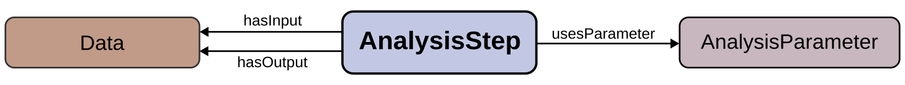

The NEAO design assumes that neuroelectrophysiology data analysis consists of a sequence of small, atomic steps, each performing a specific action to generate, transform, or characterize data.
For example, consider the example below illustrating the sequence of steps to plot the power spectral density (PSD) of a local field potential (LFP) time series recorded by an extracellular electrode implanted in a brain area and saved to a data file.
First, the raw data is loaded from the file into a data structure containing the voltage time series acquired by the recording equipment. The LFP is the low-frequency component of the extracellular signal (e.g., below 250 Hz), so a low-pass filter with a 250 Hz cutoff is applied to obtain the LFP time series. The PSD is then computed from the filtered data, resulting in an array of power density estimates for various frequency values. This power spectrum can be plotted and saved to a file. In this example, each step takes input data, processes it, and produces output data, with parameters (e.g., the low-pass cutoff frequency for filtering) controlling each step.
We propose the NEAO to describe such scenarios:

NEAO is organized around the central AnalysisStep class to model the atomic steps of the analysis. This class represents any process that generates new data entities (e.g., generating artificial LFP data) or performs specific operations to extract additional information from existing data entities. These operations include data transformations (e.g., filtering the raw signal into the LFP) or computations of new, derived data (e.g., obtaining the PSD from the LFP signal). Thus, each analysis step either acts on existing data entities or produces new data.
Two additional classes complete the core of the ontology model: Data and AnalysisParameter.
The Data class represents any entity containing information used during the analysis and serves as the input and output for analysis steps. It can represent data obtained from biological electrophysiology recordings or data generated or transformed during analysis steps. In the example of computing the PSD from an electrode signal, the raw signal time series, the filtered LFP time series, the resulting PSD estimate array, and the plot are all instances of the Data class.
The AnalysisParameter class represents information entities that control the behavior of an analysis step. These parameters do not provide data to the step but influence its output. In the example above, the filter step uses a 250 Hz low-frequency cutoff parameter to set the bandwidth of the output signal.
To accurately describe neuroelectrophysiology data analysis, two key aspects must be considered:
Multiple complementary and overlapping analysis methods can be used to understand a feature of brain activity from the recorded data, with each method's strengths and limitations influencing the results. For instance, various algorithms can compute the PSD of recorded signals, each producing similar measures but with different interpretations based on characteristics such as their frequency resolution.
The implementation of a specific analysis method can vary across different software tools, potentially leading to subtle differences in results even when using the same underlying method.
Therefore, a clear and unambiguous description of both the methodology and the software implementations is essential for reliable insights into neuroelectrophysiology data analysis. NEAO aims to address the ambiguities that can be present when describing the steps, data, and parameters during the analysis:
Naming: NEAO introduces a controlled vocabulary for naming classes, which is associated with a clear description, to avoid confusion with similar terms. Moreover, each class has a clear label, alternative labels to account for synonyms, and common abbreviations.
Code: NEAO structures details of the code executing an analysis step ensuring precise identification of software tools and their versions.
Bibliographic References: NEAO links analysis steps to specific publications ensuring clear identification of the method’s version and its detailed description.
The main NEAO classes provide detailed descriptions of specific analysis steps, data, and parameters. One example of a specific step is the computation of a PSD using either the Welch or the multitaper method.
However, to gain broader insights, general information about the analysis must be available. For instance, instead of querying if an analysis step used a specific method for computing a PSD (such as the Welch or multitaper), one may be interested in identifying if the analysis step is part of a category of methods (that includes any method that computes a PSD).
NEAO provides classes that introduce those semantic groupings, organizing the information in relevant categories and allowing more generalized insights on the analyses.
The NEAO definitions are divided into submodules, each defining a small ontology associated with a single namespace.
The core model is defined in a base module, and each of the three main classes (AnalysisStep, Data, and AnalysisParameter) is expanded in additional modules.
The documentation for each submodule provides extended details on the implementation, and is accessible in the table below:
| Root | The overall module, that contains the main metadata and publishing information of NEAO. | neao | \\\<http://purl.org/neao/\\\> |
| Base | The top-level classes of the NEAO model that are imported by other modules. It defines the three main classes, the software implementation description, and all the related properties. | neao_base | \\\<http://purl.org/neao/base#\\\> |
| Steps | Module to extend the AnalysisStep base class, in order to define the specific analysis steps and their semantic groupings. | neao_steps | \\\<http://purl.org/neao/steps#\\\> |
| Data | Module to extend the Data base class, in order to define the specific data entities and their semantic groupings. | neao_data | \\\<http://purl.org/neao/data#\\\> |
| Parameters | Module to extend the AnalysisParameter base class, in order to define the specific parameters and their semantic groupings. | neao_params | \\\<http://purl.org/neao/parameters#\\\> |
| Bibliography | Define individuals with the bibliographic references used to annotate AnalysisStep classes. | neao_bib | \\\<http://purl.org/neao/bibliography#\\\> |
Other ontologies provide elements that align to the concepts represented in NEAO. Here we provide a brief comparison.
| Ontology | Class | NEAO Class | Description |
| Ontology for Biomedical Investigations (OBI) | data transformation (OBI_0200000) | AnalysisStep | The OBI class fits the central concept by the NEAO AnalysisStep class, as a planned process that transforms input data into an output. However, the OBI class is broad in the domain of biomedical sciences. The specific subclasses defined in OBI encompass executing analyses with specific methodologies (e.g., mass spectrometry) or a few processes described in the many subclasses of NEAO AnalysisStep (e.g., normalization data transformation). Therefore, the NEAO AnalysisStep class is specific to processes in neuroelectrophysiology data analysis, and the overlap with the classes in OBI is not full. |
| data item (IAO_0000027) | Data | The OBI class (imported from the Information Artifact Ontology - IAO) fits the central concept of the NEAO Data class. The subclass measurement datum represents data obtained from an experimental recording and it has a specific subclass to represent spike trains (spike train datum). Other subclasses represent different dimensions of data or elements that are described by the AnalysisParameter class in NEAO. For example, the subclass data set is an aggregation of other data item elements, a construct inexistent in NEAO. The average data subclass represents a computed average, which is aligned with the NEAO Mean class. Other classes are defined for specific data elements in biomedical sciences. Therefore, there are few overlaps with specific subclasses of Data defined in NEAO, and there is no representation for specific analysis outputs in neuroelectrophysiology. This difficults the description in cases where there is a mapping between specific data and methods, which is modeled in NEAO. For example, the PhaseLockingValue and CorrectedImaginaryPhaseLockingValue classes in NEAO are associated with one of the specific steps to perform the phase locking value analysis, which are defined as subclasses of PhaseLockingValueAnalysis in the taxonomy of NEAO AnalysisStep. This ontological representation is not available in OBI. | |
| Ontology of bioscientific data analysis and data management (EDAM) | Operation (operation_0004) | AnalysisStep | The concept aligns with NEAO, especially with the has input and has output relationships to Data that are semantically similar to the model defined in NEAO. However, the subclass structure of the EDAM Operation class introduces some inconsistensies to the subclass structure of NEAO AnalysisStep. In EDAM, the Data analysis class defines the concept of applying an analytical method to the input, which is the core concept associated with many AnalysisStep subclasses in NEAO. For other transformations, EDAM defines the different branch Calculation, which encompasses operations such as dimensionality reduction and statistical computations. However the EDAM classs Principal component analysis is a subclass of statistical calculation and not dimensionality reduction, which is inconsistent with the classification in NEAO. Therefore, although the full set of AnalysisStep subclasses is expected to overlap with the concept of EDAM Operation, the taxonomy to provide semantic groupings differ between the two ontologies. Finally, there are no specific coverage for methods in neuroelectrophysiology. For example, the Spectral analysis class in EDAM groups methods for computing mass spectrometry spectra, which is unrelated to the scope of NEAO. |
| Data (data_0006) | Data | The EDAM class aligns with the concept of NEAO. However, there are no subclasses related to neuroelectrophysiology, and the existing definitions are inconsistent. For example, Spectrum in EDAM refers to a measure from mass spectrometry, and is unrelated to the concept defined by the PowerSpectralDensity class in NEAO. |